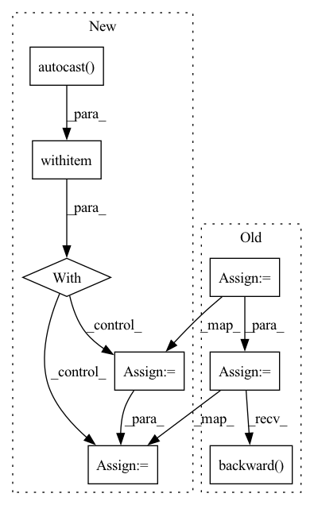

Pattern ID :1077
Before Change
labels = labels.cuda()
aux, pred = model(images)
pred = interp(pred)
aux = interp(aux)
loss = seg_loss(pred, labels) + 0.4 * seg_loss(aux, labels)
loss.backward()
optimizer.step()
print(
After Change
lr = adjust_learning_rate(
args, optimizer, i_iter, args.num_epochs * len(trainloader.dataset))
with torch.cuda.amp.autocast() :
images = images.cuda()
labels = labels.cuda()
aux, pred = model(images)
pred = interp(pred)
aux = interp(aux)
loss = seg_loss(pred, labels) + 0.4 * seg_loss(aux, labels)
scaler.scale(loss).backward()
scaler.step(optimizer)
In pattern: SUPERPATTERN
Frequency: 6
Non-data size: 8
Instances Fragment ID: 5374354
Project Name: smhassanerfani/atlantis
Commit Name: 35a88733c2d4ab90e1ab4a38c2b07faa89eb1d50
Time: 2021-09-13
Author: serfani@email.sc.edu
File Name: train.py
M Class Name: AnonimousClass
N Class Name: AnonimousClass
M Method Name: main(0)
N Method Name: main(0)
M Parent Class:
N Parent Class:
M File Name: train.py
N File Name: train.py
M Start Line: 111
M End Line: 138
N Start Line: 111
N End Line: 146
Before Change
else:
raise NotImplementedError
gen_acml_loss = self.G_loss(dis_out_fake)
if self.conditional_strategy == "ACGAN":
gen_acml_loss += self.ce_loss(cls_out_fake, fake_labels)
if self.latent_op:
gen_acml_loss += transport_cost*self.latent_norm_reg_weight
gen_acml_loss = gen_acml_loss/self.accumulation_steps
gen_acml_loss.backward()
self.G_optimizer.step()
// if ema is True: we update parameters of the Gen_copy in adaptive way.After Change
for step_index in range(self.g_steps_per_iter):
self.G_optimizer.zero_grad()
for acml_step in range(self.accumulation_steps):
with torch.cuda.amp.autocast() if self.mixed_precision else dummy_context_mgr() as mp:
z, fake_labels = sample_latents(self.prior, self.batch_size, self.z_dim, 1, self.num_classes, None, self.default_device)
if self.latent_op:
z, transport_cost = latent_optimise(z, fake_labels, self.gen_model, self.dis_model, self.latent_op_step, self.latent_op_rate,
self.latent_op_alpha, self.latent_op_beta, True, self.default_device)
fake_images = self.gen_model(z, fake_labels)
if self.diff_aug:
fake_images = DiffAugment(fake_images, policy=self.policy)
if self.conditional_strategy == "ACGAN":
cls_out_fake, dis_out_fake = self.dis_model(fake_images, fake_labels)
elif self.conditional_strategy == "cGAN" or self.conditional_strategy == "no":
dis_out_fake = self.dis_model(fake_images, fake_labels)
else:
raise NotImplementedError
gen_acml_loss = self.G_loss(dis_out_fake)
if self.conditional_strategy == "ACGAN":
gen_acml_loss += self.ce_loss(cls_out_fake, fake_labels)
if self.latent_op:
gen_acml_loss += transport_cost*self.latent_norm_reg_weight
gen_acml_loss = gen_acml_loss/self.accumulation_steps
self.gen_scaler.scale(gen_acml_loss).backward()
Fragment ID: 5374355
Project Name: postech-cvlab/pytorch-studiogan
Commit Name: aff9cdd6424bcd8c9bd80ee37c8e22e98a5237f9
Time: 2020-08-19
Author: first287@naver.com
File Name: trainer.py
M Class Name: Trainer
N Class Name: Trainer
M Method Name: run(3)
N Method Name: run(3)
M Parent Class:
N Parent Class:
M File Name: trainer.py
N File Name: trainer.py
M Start Line: 364
M End Line: 452
N Start Line: 381
N End Line: 474
Before Change
// Initialize the model gradient.
model.zero_grad()
// Generate super-resolution images.
sr = model(lr)
// Calculate the difference between the super-resolution image and the high-resolution image at the pixel level.
pixel_loss = criterion(sr, hr)
// Update model weights.
pixel_loss.backward()
optimizer.step()
// Write the loss during training into Tensorboard.
iters = index + epoch * batches + 1
writer.add_scalar("Train/Loss", pixel_loss.item(), iters)After Change
// Initialize the model gradient.
model.zero_grad()
// Mixed precision training.
with amp.autocast() :
sr = model(lr)
loss = criterion(sr, hr)
loss.backward()
optimizer.step()
// Write the loss during training to Tensorboard. Fragment ID: 5374368
Project Name: lornatang/srcnn-pytorch
Commit Name: bb3fc88fe2a676c6b92667d4f11618eadbe949fb
Time: 2021-09-15
Author: liuchangyu1111@gmail.com
File Name: train.py
M Class Name: AnonimousClass
N Class Name: AnonimousClass
M Method Name: train(2)
N Method Name: train(2)
M Parent Class:
N Parent Class:
M File Name: train.py
N File Name: train.py
M Start Line: 43
M End Line: 47
N Start Line: 40
N End Line: 43
Before Change
scheduler = CosineAnnealingLR(optimizer, train_iteration, 1e-3, last_epoch=i-1)
start = time.time()
output = model(images)
forward_time = time.time() - start
loss = criterion(output, target)
optimizer.zero_grad()
start = time.time()
loss.backward()
backward_time = time.time() - start
// Set to 0 the gradient of pruned neurons
with torch.no_grad():After Change
optimizer = SGD(model.parameters(), lr=0.1, weight_decay=1e-4)
scheduler = CosineAnnealingLR(optimizer, train_iteration, 1e-3, last_epoch=i-1)
with torch.cuda.amp.autocast() :
start = time.time()
output = model(images)
forward_time = time.time() - start
loss = criterion(output, target)
optimizer.zero_grad()
start = time.time() Fragment ID: 5374385
Project Name: eidoslab/simplify
Commit Name: 8c1cf93f9a2545c52c01379b934939040a76cc77
Time: 2021-07-01
Author: carlo.alberto.barbano@outlook.com
File Name: training/train.py
M Class Name: AnonimousClass
N Class Name: AnonimousClass
M Method Name: main(1)
N Method Name: main(1)
M Parent Class:
N Parent Class:
M File Name: training/train.py
N File Name: training/train.py
M Start Line: 55
M End Line: 112
N Start Line: 55
N End Line: 116
Before Change
features = features.float().to(device) // (B,T,F)
targets = targets.long().to(device)
outputs = model(features) // (embed_a,embed_b) in most cases
embeds = outputs[-1] if isinstance(outputs, tuple) else outputs
outputs = model.module.projection(embeds, targets)
loss = criterion(outputs, targets)
// loss, acc
loss_meter.add(loss.item())
acc_meter.add(outputs.cpu().detach().numpy(),
targets.cpu().numpy())
// updata the model
optimizer.zero_grad()
loss.backward()
optimizer.step()
// log
if (i + 1) % log_batch_interval == 0:After Change
features = features.float().to(device) // (B,T,F)
targets = targets.long().to(device)
with torch.cuda.amp.autocast(enabled=enable_amp) :
outputs = model(features) // (embed_a,embed_b) in most cases
embeds = outputs[-1] if isinstance(outputs, tuple) else outputs
outputs = model.module.projection(embeds, targets)
loss = criterion(outputs, targets)
Fragment ID: 5374389
Project Name: wenet-e2e/wespeaker
Commit Name: 80e5c79b304005c55cafe7ebd7e7ca7682c9191d
Time: 2022-11-22
Author: chenzhengyang117@gmail.com
File Name: wespeaker/utils/executor.py
M Class Name: AnonimousClass
N Class Name: AnonimousClass
M Method Name: run_epoch(13)
N Method Name: run_epoch(11)
M Parent Class:
N Parent Class:
M File Name: wespeaker/utils/executor.py
N File Name: wespeaker/utils/executor.py
M Start Line: 57
M End Line: 70
N Start Line: 32
N End Line: 76
Before Change
cls_fake_proxies, cls_fake_embed, dis_fake_authen_out = self.dis_model(fake_images, fake_labels)
dis_acml_loss = self.D_loss(dis_real_authen_out, dis_fake_authen_out)
if self.conditional_strategy == "ContraGAN":
dis_acml_loss += self.contrastive_lambda*self.contrastive_criterion(cls_real_embed, cls_real_proxies, real_cls_mask,
real_labels, t, self.margin)
elif self.conditional_strategy == "Proxy_NCA_GAN":
dis_acml_loss += self.contrastive_lambda*self.NCA_criterion(cls_real_embed, cls_real_proxies, real_labels)
elif self.conditional_strategy == "XT_Xent_GAN":
pass
else:
raise NotImplementedError
if self.consistency_reg or self.conditional_strategy == "XT_Xent_GAN":
real_images_aug = real_images_aug.to(self.default_device)
_, cls_real_aug_embed, dis_real_aug_authen_out = self.dis_model(real_images_aug, real_labels)
if self.conditional_strategy == "XT_Xent_GAN":
dis_acml_loss += self.contrastive_lambda*self.XT_Xent_criterion(cls_real_embed, cls_real_aug_embed, t)
if self.consistency_reg:
consistency_loss = self.l2_loss(dis_real_authen_out, dis_real_aug_authen_out)
dis_acml_loss += self.consistency_lambda*consistency_loss
dis_acml_loss = dis_acml_loss/self.accumulation_steps
dis_acml_loss.backward()
self.D_optimizer.step()
if self.weight_clipping_for_dis:After Change
else:
real_images, real_labels = next(train_iter)
with torch.cuda.amp.autocast() if self.mixed_precision else dummy_context_mgr() as mp:
real_images, real_labels = real_images.to(self.default_device), real_labels.to(self.default_device)
if self.diff_aug:
real_images = DiffAugment(real_images, policy=self.policy)
z, fake_labels = sample_latents(self.prior, self.batch_size, self.z_dim, 1, self.num_classes, None, self.default_device)
real_cls_mask = make_mask(real_labels, self.num_classes, self.default_device)
cls_real_proxies, cls_real_embed, dis_real_authen_out = self.dis_model(real_images, real_labels)
fake_images = self.gen_model(z, fake_labels)
if self.diff_aug:
fake_images = DiffAugment(fake_images, policy=self.policy)
cls_fake_proxies, cls_fake_embed, dis_fake_authen_out = self.dis_model(fake_images, fake_labels)
dis_acml_loss = self.D_loss(dis_real_authen_out, dis_fake_authen_out)
if self.conditional_strategy == "ContraGAN":
dis_acml_loss += self.contrastive_lambda*self.contrastive_criterion(cls_real_embed, cls_real_proxies, real_cls_mask,
real_labels, t, self.margin)
elif self.conditional_strategy == "Proxy_NCA_GAN":
dis_acml_loss += self.contrastive_lambda*self.NCA_criterion(cls_real_embed, cls_real_proxies, real_labels)
elif self.conditional_strategy == "XT_Xent_GAN":
pass
else:
raise NotImplementedError
if self.consistency_reg or self.conditional_strategy == "XT_Xent_GAN":
real_images_aug = real_images_aug.to(self.default_device)
_, cls_real_aug_embed, dis_real_aug_authen_out = self.dis_model(real_images_aug, real_labels)
if self.conditional_strategy == "XT_Xent_GAN":
dis_acml_loss += self.contrastive_lambda*self.XT_Xent_criterion(cls_real_embed, cls_real_aug_embed, t)
if self.consistency_reg:
consistency_loss = self.l2_loss(dis_real_authen_out, dis_real_aug_authen_out)
dis_acml_loss += self.consistency_lambda*consistency_loss
dis_acml_loss = dis_acml_loss/self.accumulation_steps
self.dis_scaler.scale(dis_acml_loss).backward()
Fragment ID: 5374365
Project Name: postech-cvlab/pytorch-studiogan
Commit Name: aff9cdd6424bcd8c9bd80ee37c8e22e98a5237f9
Time: 2020-08-19
Author: first287@naver.com
File Name: trainer.py
M Class Name: Trainer
N Class Name: Trainer
M Method Name: run_ours(3)
N Method Name: run_ours(3)
M Parent Class:
N Parent Class:
M File Name: trainer.py
N File Name: trainer.py
M Start Line: 213
M End Line: 289
N Start Line: 224
N End Line: 307